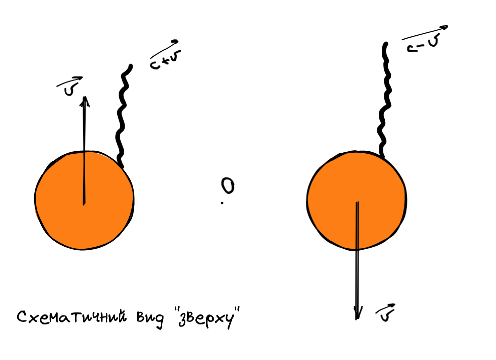
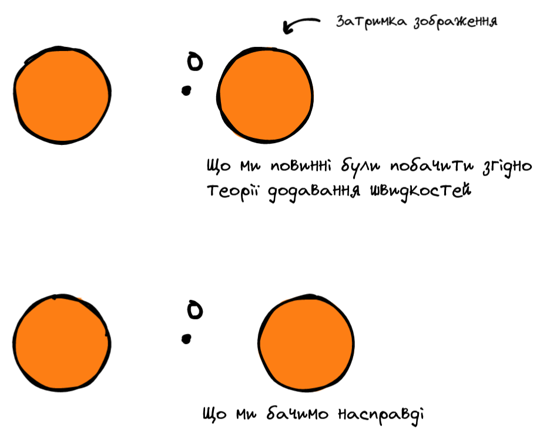
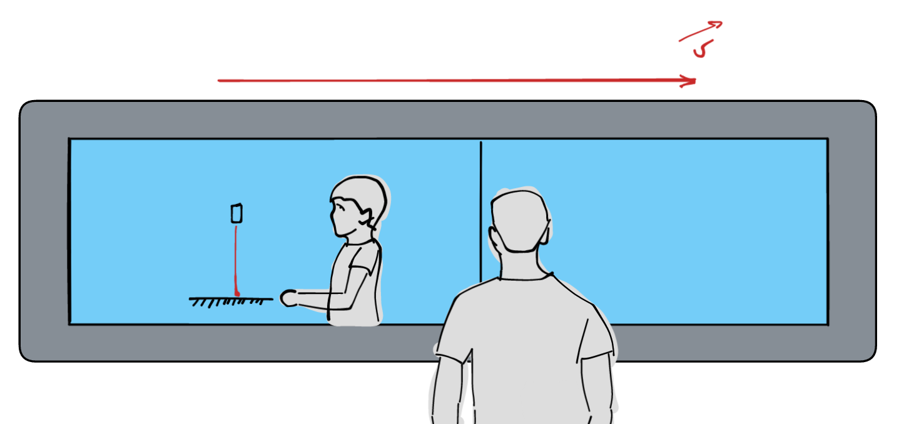
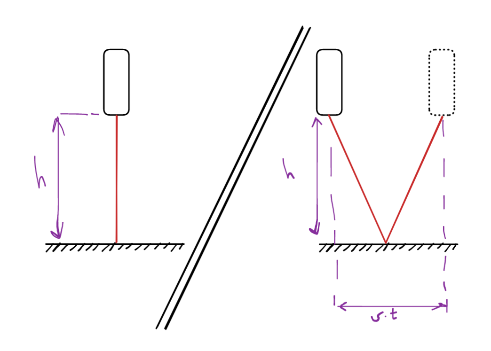
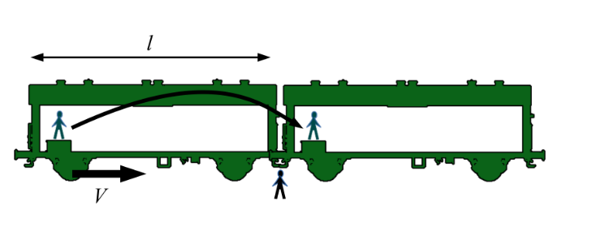
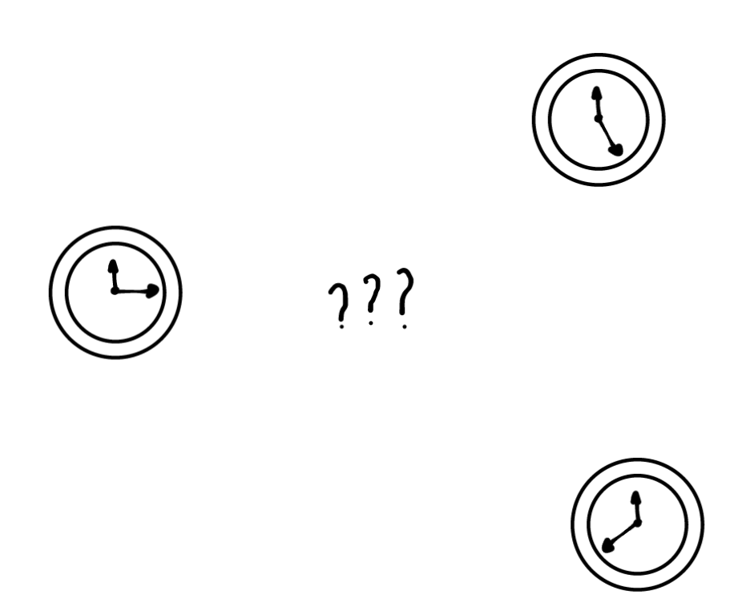
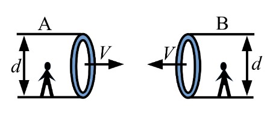
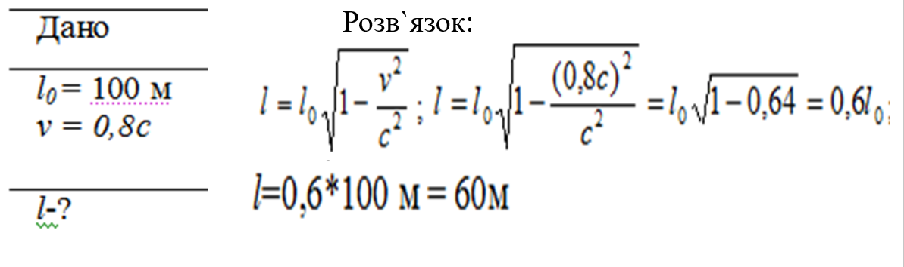

Підготвуали: Філатов Єгор, Терещенко Єгор, Чорний Павло, Енс Герман, Гарькавий Олександр, Кіселев Александр
Актуальність
Людство здавна прагне досліджувати космос. Ми вже навчилися будувати ракети, які пересуваються у космічному просторі, але ми ще дуже далекі від досконалості. За той час, коли космос став нам доступним, ми досягли багатьох успішних цілей за рахунок технічного прогресу.
Слід усвідомлювати, що в масштабах Всесвіту наші досягнення є нікчемними. З безлічі існуючих космічних тіл, людина поки що змогла дістатися лише свого супутника, Місяця. Крім того, дослідження планет Сонячної системи здійнюється далеко не найсучаснішими засобами.
Уявимо на хвилинку: скільки часу ракети витратять, щоб дістатися хоча б Сатурна? Це години, дні мандрування космічним простором на швидкостях, близьких до швидкостей світла! Класична механіка не дає інформації, що відбувається на таких швидкостях - потрібно вивчати іншу теорію, теорію відносності.
1. Принцип відносності Галілея, Ейнтшейна
Принцип відносності Галілея було покладено в основу класичної механіки Ньютона, і він є основою розуміння систем відліку, складаючись з двох постулатів:
1. Існують інерційні системи відліку - такі, в яких вільний рух відбувається рівномірно і прямолінійно.
2. В усіх інерційних СВ всі механічні закони природи однакові.
Іноді формулюють визначення від супротивного: неможливо знайти різницю між двома інерційними СВ, які рухаються один відносно одного з постійною швидкістю, якщо проводити у них будь-які механічні досліди.
З принципа Галілея виходить закон додавання швидкостей: $\vec{v}=\vec{v_{с.в.}}+\vec{v_0}$
Ейнштейн розширив визначення другого постулату на усі закони природи - механічні, електромагнітні, квантові тощо.
Наразі постулат №2 звучить зрозуміло, але наступний йому майже вступає в суперечність, (на перший погляд). Щоб підготвуатись до третього постулата, пропонуємо розглянути дослід Віллем де Сіттера про подвійні зірки.
2. Дослід Віллем де Сіттера про подвійні зірки, Експеримент Майкельсона й Морлі
Якщо світло підпорядковується законам класичної механіки - закон додавання швидкостей повинен виконуватись! З такою думкою Віллем де Сіттер у 1913 році звернувся до свого телескопа і поглянув на подвійні зорі. Дійсно, згідно теорії світло повинно надходити швидше від однієї зорі і повільніше від іншої, що призведе до "затримки" зображення однієї відносно іншої, при чому затримувана зірка завжди знаходитимесь з одного й того самого боку.
Поглянувши на таку систему, він не помітив ніяких нерівномірностей - все було так, якби світло не змінювало своєї швидкості розповсюдження. Так був написан третій постулат принципа відносності Ейнштейна:
3. Швидкість світла в вакуумі однакова для спостерігачів у будь-яких інерційних системах відліку.
Експеримент Майельсона й Морлі
Постулати Ейнштейна. Основа СТО.
1. Існують інерційні системи відліку - такі, в яких вільний рух відбувається рівномірно і прямолінійно.
2. В усіх інерційних СВ усі закони природи однакові.
3. Швидкість світла в вакуумі однакова для спостерігачів у будь-яких інерційних системах відліку.
3. Відносність часу
Розглянемо таку задачу: друг Петро стоїть на залізничій станції, очікуючи свого рейса. У той самий час повз нього проїзжає Максим, якого він бачить у вікні потяга. Максим не зупиняється, проїзжає дуже - дуже! - швидко. Окрім цього, Максим тримає фонарик, напрямлюючи його вертикально донизу, на дзеркальце. Що ж побачить кожен хлопець?
Дві точки зору:
Перша точка зору: Максим тримає фонарик, промінь якого напрямляється до дзерлкала. Відстань $h$ світло проходить двічі за час $T_0 = \frac{2h}{c}$ секунд.Друга точка зору: Петро бачить, як Максим віддаляється від нього з фонариком і дзеркальцем. Потяг рухається, тому траєкторія точки променя світла утворює рівнобічний трикутник, висота якого дорівнює $h$, а основа $d = v*T$.
Примітимо, як це неможливо з точки зору нерелятивістської механіки: швидкість світла стала, а шлях різний! Щоб скомпенсувати, у формулах зараз використвовуються різні значення часу - $T_0$ і $T$.
Знайдемо за допомогою теореми Піфагора довжину траєкторії світла:
Виведення:
Отримали формулу відносності часу. Ця формула показує, що на подію ми витратимо більше часу, аніж спостерігач рухомої СВ. Іншими словами, час іде "швидше" для іншого спостерігача.
4. Відносність довжини
Схожий експеримент ми зможемо провести, якщо виміряємо довжину потягу. Ми вже вміємо пов'язувати час між двома інерційними СВ, тому світловий годинник більше не потрібен (але за його допомогою також можна вивести наступні міркування). Розглянемо той самий потяг та тих самих друзів.
Візьмемо час, за який потяг проходить повз нерухомого друга на свою довжину: $t_0 = \frac{l}{v}$ Поки потяг пройшов повз Петра, сам Петро для Максима змінив своє положення на $l_0$ метрів. Час, що пройшов для Максима, рівний $t = \frac{l_0}{v}$ Знаючи рівняння відношення часу, отримуємо систему:
Виведення
Отримане рівняння вказує, що довжина потягу стискується для Максима. Ось ці два рівняння - відношення часу і відношення довжини - і складають основу Спеціальної Теорії Відносності.
5. Узагальнення знань
Впродовж цієї доповіді було сформовано низку нових розумінь щодо простору й часу, тому є доцільним ввести нові, формальні поняття.
5.1 Координатний простір
Як ми побачили, час, як і простір, можуть відрізнятись між системами відліку. Саме тому у СТО пропонується використання чотирьохвимірної координатної системи $(x,y,z,t)$. У другій частині доповіді ми дослідимо перетворення для праці з координатними системами, а поки залишимо.
5.2 Синхронізація годинників
Кожен наш рух (прискорення, сповільненя) спричиняє зміну плину часу і розтягу простору. Як нам поставити два годинники у різних точках СВ так, щоб вони були синхронізовані?
Рішення
Не рухаючись з місця, оберемо початок координат $(x,y,z,t)=(0,0,0,0)$, і посвітимо з цієї точки лампою. Світ надійде до кожного годинника через $t=\frac{\sqrt{x^2+y^2+z^2}}{c}$ секунд, і ми (точніше, наш помчник) ввімкне годинник.
5.3 Поперечні розміри
У розділі "Відносність часу" ми зробили страшне припущення: сказали, що відстань між лазером і дзеркалом постійна як для Максима, так і для Петра. Це припущення є дійсним, але ще не доведеним. Чи можете Ви його вивести?
Підказка: знайдіть суперечність.
Рішення
Нехай якось поперечні розміри змінюються, збільшуються чи зменшуються. Тоді розглянемо дві труби, які з певною швидкістю йдуть одна на одну.
Спостерігач першої труби бачить, як друга труба на нього іде. Так як її діаметр змінився, згідно нашого припущення, то труба опонента повинна потрапити в трубу спостерігача (або навпаки). З іншого боку, те саме повинне відбутися й для іншого спостерігача. Отримуємо, що кожна труба повинна потрапити одна в одну. Суперечність!
5.4 Швидкість світла
(Як вченим вдалось сповільнити світло до 5555 м/с)
Ейнштейн заявив, що швидкість світла у вакуумі постійна для будь-якої СВ. Що ж відбувається в інших середовищах? Насправді, якщо середовище ізотропне і однорідне, світло буде проходити в ньому повільніше, зі швидкістю $c = \frac{c_0}{n}$. Так, алмази мають показник заломлення 2,4, а найбільшим показником є показник заломлення всередині Германію зі значенням 4.1. Чи ми можемо сповільнити сильніше?
З цим питанням група вчених провела експеримент, в якому використовувала матеріал надзвичайних температур и тисків - конденсацію Бозе-Ейнштейна. В ньому через екстремальну густину частинок світло сповільнилось до 5555 м/с! Докладніше про це можна послухати за посиланням нижче:
6. Практикум задач
6.1 Задача про космічний корабель
Довжина космічного корабля відносно нерухомого спостерігача 100 метрів. Яким стане його довжина при русі зі швидкістю 80% від швидкості світла?
Відповідь: 60метрів
6.2 Задача на самостійне розв'язання
Синхрофахотрон надсилає пучок протонів, швидкість яких становить 99% від швидкості світла. Знайти:
1. Відносне зменшення розміру протонів у напрямі руху;
2. Час $t_0$ з точки зору земного спостерігача, який відповідає проміжку часу в 1с, виміряному годинником, зв'язаним з протоном.
Рішення
Відповідь: розмір зменшиться у 10 разів, час становить 10 секунд.